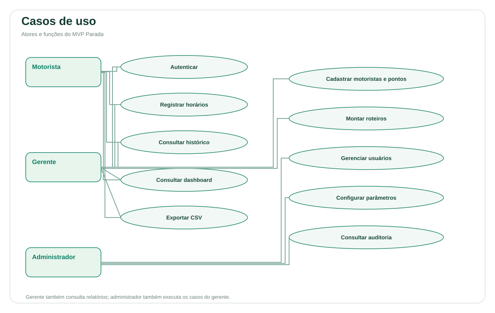
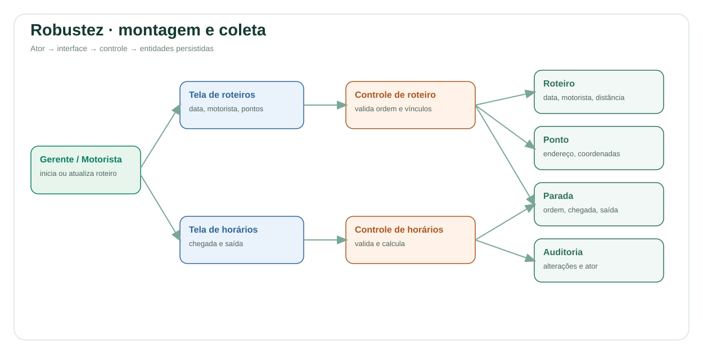
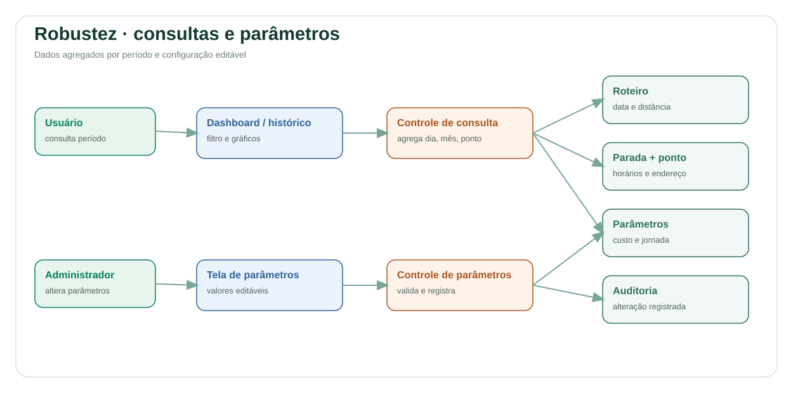
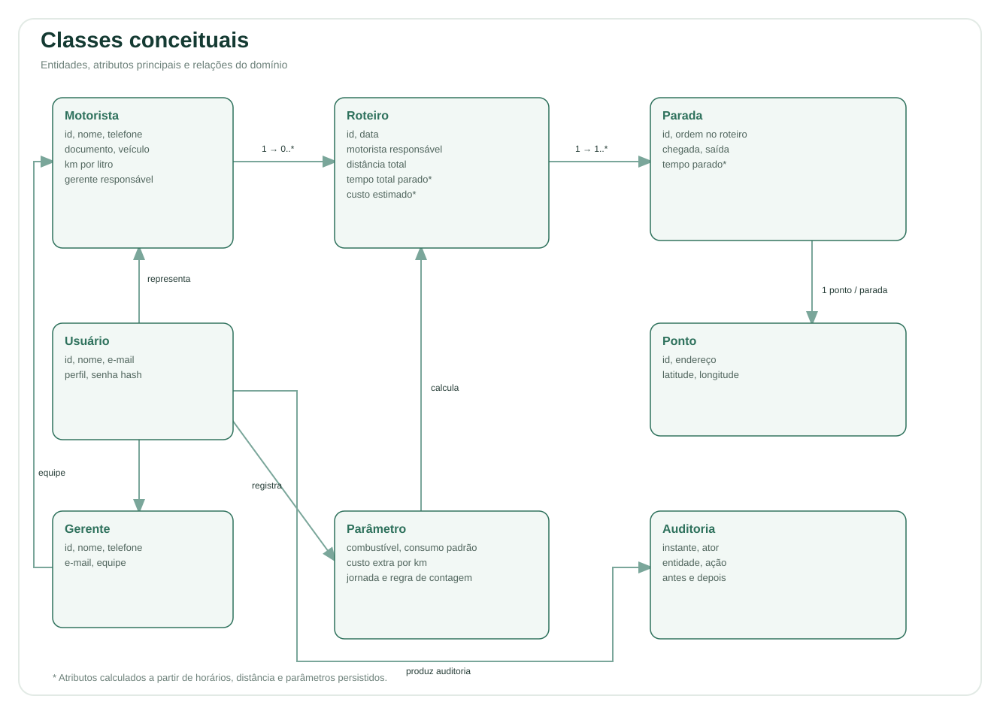

Disciplina: Engenharia de Software II.
Professor: Sandro Laudares.
Produto: Parada — inteligência em cada rota.
Referência: Especificação de Requisitos — Trabalho2, fornecida para o 2º Trabalho Avaliativo.
Versão: 28/09/2026.
Integrantes: preencher com os nomes da dupla ou trio antes de entregar.
Equipes de logística precisam conhecer onde e por quanto tempo seus profissionais ficam parados. Sem registros por endereço, horários e roteiro, os gargalos ficam invisíveis e o custo do trajeto é difícil de avaliar.
O Parada registra pontos ordenados de um roteiro diário e calcula tempos e custos. O MVP inclui cadastros, coleta de chegada e saída, histórico com endereços, gráficos por dia, mês e período, parâmetros editáveis e relatórios CSV. É uma aplicação web responsiva com servidor Python e persistência SQLite.
Ficam fora do escopo roteirização automática, integração com ERP ou folha, telemetria em tempo real e aplicativo nativo publicado em lojas. As coordenadas são informadas manualmente; não há geocodificação externa. A distância é fornecida pelo responsável pelo roteiro.
| Ator | Responsabilidades |
|---|---|
| Motorista/motoboy | Criar conta vinculada à equipe, entrar, consultar próprios roteiros, registrar e corrigir seus horários, consultar próprios indicadores e histórico, exportar CSV. |
| Gerente/coordenador | Criar equipe, fornecer código de convite, cadastrar e editar motoristas, cadastrar e editar seus pontos, montar roteiros da equipe, alterar distância, registrar ou corrigir horários, consultar painel e relatórios da equipe. |
| Administrador | Cadastrar gerentes e acessos, executar as operações de gestão, alterar parâmetros globais, consultar auditoria. |
Todo novo motorista tem um gerente. Gerentes acessam apenas sua equipe e seus roteiros. Pontos criados por gerentes ficam restritos à equipe; pontos criados por administradores são compartilhados para consulta, com edição pelo administrador. A mesma regra de compartilhamento preserva pontos legados sem proprietário. Motoristas consultam apenas pontos de seus próprios roteiros.

Atores: gerente, administrador e motorista no autocadastro.
Requisitos: RF01, RF02; RNF04.
Exceções: código inválido, campos ausentes, consumo não positivo, cadastro duplicado ou tentativa de alterar outra equipe impedem a operação.
Pós-condição: profissional persistido e associado ao responsável; quando há acesso, senha protegida por hash.
Atores: gerente e administrador. Requisitos: RF03, RNF05.
O responsável informa endereço e, quando disponíveis, latitude e longitude. O sistema valida os limites geográficos e grava o ponto. Na edição, registra autor, instante, valores anteriores e novos na auditoria. O motorista não cadastra nem edita pontos.
Pós-condição: endereço disponível para compor os roteiros autorizados. Não se exige integração de mapas.
Atores: gerente e administrador. Requisitos: RF04; RN05, RN06.
Pré-condição: motorista e pontos cadastrados.
Exceções: motorista de outra equipe, ponto não autorizado ou referência inexistente impedem a operação.
Pós-condição: roteiro persistido com ordem definida. A especificação não limita o motorista a um roteiro por dia.
Atores: motorista do roteiro, seu gerente e administrador. Requisitos: RF05, RF06; RN01, RN02, RN03; RNF05.
Horários sem chegada ou saída completa permanecem em aberto e contribuem com zero. O início da contagem nunca pode ser inferior a 2; a partida sempre contribui com zero. A saída pode ocorrer após a meia-noite, sem preceder a chegada. Os horários operacionais usam a hora local da instalação, sem fuso; a auditoria usa UTC.
Atores: todos, dentro das permissões. Requisitos: RF07, RF08; RNF03.
O gráfico por endereço mostra os sete maiores tempos; o histórico e o CSV contêm todas as paradas do período. Datas sem roteiro não são inventadas. Período invertido ou que alcance o aniversário de 12 meses da data inicial é rejeitado.
Ator para edição: administrador. Consulta: todos, nos seus roteiros.
Requisitos: RF09, RF10, RF11; RN04, RN07.
Administrador altera combustível, consumo padrão, adicional por km, jornada e posição de início da contagem. Sistema valida os valores, salva todos os parâmetros em uma transação e audita a mudança. O consumo específico do veículo é editado no cadastro do motorista; quando ausente, aplica-se o padrão.
Fórmulas:
Padrões: combustível R$ 6/l, consumo 12 km/l, adicional R$ 0/km, jornada 8 h/dia e contagem a partir do ponto 2. O percentual é por roteiro; não representa horas efetivamente trabalhadas. Os custos e tempos exibidos são recalculados com os parâmetros vigentes, não são cotações congeladas no passado.
Atores: todos, dentro das permissões. Requisito: RF12.
Após selecionar o período, usuário solicita CSV. Sistema aplica a mesma autorização do painel e gera arquivo UTF-8 com separador ponto e vírgula. Cada linha corresponde a uma parada após a partida, com endereço, horários, tempo e indicadores do roteiro. Distância, custo total e percentual se repetem nas linhas de um mesmo roteiro; devem ser contabilizados uma vez por roteiro ao analisar o CSV.
Ator: administrador. Requisitos: RNF04, RNF05.
Administrador cria gerentes e acessos ligados a profissionais cadastrados e consulta as últimas 200 operações. A auditoria persistida inclui instante, autor, entidade, identificador, ação, antes e depois. A interface limita a consulta recente; registros anteriores permanecem no banco. A configuração inicial cria o primeiro administrador e não pode ser repetida após sua criação.
| Regra | Decisão de implementação |
|---|---|
| RN01 | Posição 1 nunca acumula tempo. Posição inicial configurável tem mínimo 2. |
| RN02 | Diferença exata entre saída e chegada; cálculo em segundos. |
| RN03 | Soma somente dos pontos contabilizados; registros incompletos contribuem com zero. |
| RN04 | Jornada padrão de 8 horas, editável entre 0,1 e 24. |
| RN05 | Roteiro referencia um motorista e uma data obrigatória. |
| RN06 | Posições sequenciais com unicidade por roteiro; inclusão protegida por transação. |
| RN07 | Distância multiplicada por combustível/consumo mais adicional por km. |
| Requisito | Tela ou operação |
|---|---|
| RF01 | Criar conta → Motorista; Equipe e pontos → Novo/Editar motorista. |
| RF02 | Criar conta → Gerente; administrador → Novo gerente. |
| RF03 | Equipe e pontos → Novo/Editar ponto, com endereço e coordenadas. |
| RF04 | Roteiros → Novo roteiro → Adicionar ao roteiro. |
| RF05 | Roteiro → Chegada/Saída → Salvar horários/Agora. |
| RF06 | Cálculo automático nas consultas de roteiro e painel. |
| RF07 | Histórico → filtro do período e tabela com endereços. |
| RF08 | Visão geral → gráficos por dia, mês e endereço no período. |
| RF09 | Parâmetros de combustível e adicional; edição do consumo do motorista. |
| RF10 | Parâmetros de jornada e posição inicial de contagem. |
| RF11 | Detalhe do roteiro, painel e CSV → custo estimado. |
| RF12 | Visão geral/Histórico → Exportar CSV. |
Os diagramas distinguem ator, interface (azul), controle (laranja) e entidade (verde). A interface chama o controlador, que valida permissões e regras antes de ler ou alterar entidades. Alterações de horários e pontos e sua auditoria são gravadas na mesma transação.



| Classe | Papel e atributos |
|---|---|
| Motorista | Nome, telefone, documento único, veículo, consumo opcional, gerente responsável. |
| Gerente | Nome, telefone, e-mail, código de convite; gerencia zero ou mais motoristas. |
| Usuário | Nome, e-mail único, perfil, hash de senha; pode representar motorista ou gerente. |
| Roteiro | Data, motorista, distância; tempos e custos derivados. |
| Ponto | Endereço, latitude, longitude e proprietário gerente quando aplicável. |
| Parada | Associação Roteiro–Ponto, posição, chegada e saída; tempo derivado. |
| Parâmetro | Combustível, consumo padrão, adicional/km, jornada e posição inicial. |
| Auditoria | Instante, ator, entidade, ação, valores anteriores e novos. |
Um gerente tem 0.. motoristas e cada novo motorista tem 1 gerente. Um motorista realiza 0.. roteiros; cada roteiro tem 1 motorista. Um roteiro em montagem pode ter 0.. paradas; um roteiro utilizado na coleta tem pelo menos a partida e um destino. Cada parada referencia exatamente 1 ponto e 1 roteiro. Um ponto pode participar de 0.. paradas. Um usuário produz 0..* eventos de auditoria. Pontos compartilhados não têm proprietário gerente.
SQLite guarda drivers, managers, users, sessions, places, routes, stops, settings e audit, com chaves estrangeiras, restrições de integridade, índices por data e ordem única. Horários ficam na associação Parada para que reutilizar um endereço não sobrescreva os horários de outro roteiro. Dados calculados são derivados sem substituir os registros originais. Mudanças de endereço refletem-se nas consultas atuais; o valor anterior fica na auditoria.
| ID | Medida e limite |
|---|---|
| RNF01 | SQLite em arquivo local, persistência entre reinícios, chaves estrangeiras e auditoria preservada. Não existe exclusão de roteiros na interface. |
| RNF02 | Layout com menus e formulários adaptados a telas pequenas; tabelas têm rolagem interna. Validação em navegador desktop e viewport móvel. |
| RNF03 | Consulta do período busca parâmetros, pontos e roteiros em três consultas, evitando consulta adicional por roteiro. Teste anual exige resposta inferior a 3 segundos. A medição depende do volume e do equipamento. |
| RNF04 | Autenticação por senha, PBKDF2 com salt, sessão expira em 12 horas, cookie HttpOnly e SameSite=Strict, autorização no servidor por perfil e equipe. |
| RNF05 | Auditoria de edição de pontos, horários, motoristas e parâmetros; autoria e valores anterior e novo. |
| RNF06 | Aviso de privacidade, coleta restrita aos campos da operação, separação de acesso e demonstração fictícia. Os procedimentos organizacionais de LGPD permanecem responsabilidade de uma eventual implantação real. |
O MVP não certifica conformidade jurídica com a LGPD. A organização de uma implantação real ainda precisa definir responsável, contato, finalidade e base aplicável, retenção, atendimento aos titulares e eliminação. O protótipo não possui recuperação de senha, portal de titulares, backups automáticos ou TLS. O servidor escuta somente em 127.0.0.1 para avaliação local.
| Critério do PDF | Evidência |
|---|---|
| Partida não computa tempo | Demonstração registra 20 minutos na partida e mantém contribuição zero. |
| Gráficos de dia, mês e período | Dashboard apresenta os três recortes, com filtro e endereços. |
| Tempo vinculado a endereço e horários | Histórico e CSV trazem endereço, chegada e saída da parada. |
| Parâmetros alterados sem código | Administrador edita formulário; consultas recalculam os indicadores. |
Os roteiros da especificação têm A = 15 + 10 + 50 = 75 minutos, B = 10 + 5 + 26 = 41 minutos e C = 5 + 10 + 30 = 45 minutos. O total é 161 minutos. A demonstração cria esses registros na data de sua primeira execução, em banco separado, sem alterar o banco normal. As distâncias fictícias de A/B/C são 30/20/25 km; com os parâmetros padrão, o custo total é R$ 37,50.
A suíte de testes cobre cadastro, autenticação, equipes, pontos, roteiros, horários inválidos, cálculos, alterações de consumo e parâmetros, CSV, auditoria e período anual. As instruções de execução e o roteiro da apresentação estão em README.md e APRESENTACAO.md.
Nome: Parada. Curto, pronunciável e diretamente associado à medida central do produto.
Assinatura: Inteligência em cada rota.
Mensagem: “Cada minuto parado conta. Descubra onde sua rota perde tempo.”
A campanha usa a pergunta “Sua rota tem pontos cegos?” e um gráfico dos 75 minutos do roteiro A para tornar visível o problema. O público são transportadoras e equipes de entrega urbana. A chamada é “Conheça o Parada. Planeje com dados.”
O plano com público, canais, legenda e indicadores está em campanha/PLANO.md. A peça vetorial e seu PDF estão prontos para apresentação. Não houve publicação externa.